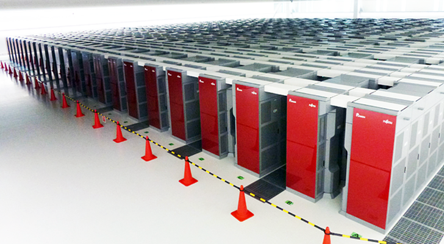

K COMPUTER:

The K computer Ð named for the Japanese word "kei" (??), meaning 10 quadrillion (1016)[4][Note 1] Ð is a supercomputer manufactured by Fujitsu, currently installed at the RIKEN Advanced Institute for Computational Science campus in Kobe, Japan.[4][5][6] The K computer is based on a distributed memory architecture with over 80,000 computer nodes.[7] It is used for a variety of applications, including climate research, disaster prevention and medical research.[6] The K computer's operating system is based on the Linux kernel, with additional drivers designed to make use of the computer's hardware.[8]
In June 2011, TOP500 ranked K the world's fastest supercomputer, with a computation speed of over 8 petaflops, and in November 2011, K became the first computer to top 10 petaflops.[9][10] It had originally been slated for completion in June 2012.[10] In June 2012, K was superseded as the world's fastest supercomputer by the American IBM Sequoia;[11] as of 2013, K is the world's fourth-fastest computer.[3]
Read more...
Performance
On 20 June 2011, the TOP500 Project Committee announced that K had set a LINPACK record with a performance of 8.162 petaflops, making it the fastest supercomputer in the world at the time;[4][6][9][12] it achieved this performance with a computing efficiency ratio of 93.0%. The previous record holder was the Chinese National University of Defense Technology's Tianhe-1A, which performed at 2.507 petaflops.[5] The TOP500 list is revised semiannually, and the rankings change frequently, indicating the speed at which computing power is increasing.[4] In November 2011, RIKEN reported that K had become the first supercomputer to exceed 10 petaflops, achieving a LINPACK performance of 10.51 quadrillion computations per second with a computing efficiency ratio of 93.2%.[10] K received top ranking in all four performance benchmarks at the 2011 HPC Challenge Awards.[13]
On 18 June 2012, the TOP500 Project Committee announced that the California-based IBM Sequoia supercomputer had replaced K as the world's fastest supercomputer, with a LINPACK performance of 16.325 petaflops. Sequoia is 55% faster than K, utilising 123% more CPU processors, but is also 150% more energy efficient.[11] As of June 2013, the world's fastest supercomputer is China's Tianhe-2, capable of a LINPACK performance of over 33 petaflops; K is currently the world's fourth-fastest computer.[3]
Titan was funded primarily by the US Department of Energy through ORNL. Funding was sufficient to purchase the CPUs but not all of the GPUs so the National Oceanic and Atmospheric Administration agreed to fund the remaining nodes in return for computing time.[10][11] ORNL scientific computing chief Jeff Nichols noted that Titan cost approximately $60 million upfront, of which the NOAA contribution was less than $10 million, but precise figures were covered by non-disclosure agreements.[10][12] The full term of the contract with Cray included $97 million, excluding potential upgrades.[12]
The yearlong conversion began October 9, 2011.[13][14] Between October and December, 96 of Jaguar's 200 cabinets, each containing 24 XT5 blades (two 6-core CPUs per node, four nodes per blade), were upgraded to XK7 blades (one 16-core CPU per node, four nodes per blade) while the remainder of the machine remained in use.[13] In December, computation was moved to the 96 XK7 cabinets while the remaining 104 cabinets were upgraded to XK7 blades.[13] The system interconnect (the network over which CPUs to communicate with each other) was updated and the ORNL's external ESnet connection was upgraded from 10 Gbit/s to 100 Gbit/s.[13][15] The system memory was doubled to 584 TiB.[14] 960 of the XK7 nodes (10 cabinets) were fitted with a Fermi based GPU as Kepler GPUs were not then available; these 960 nodes were referred to as TitanDev and used to test code.[13][14] This first phase of the upgrade increased the peak performance of Jaguar to 3.3 petaFLOPS.[14] Beginning on September 13, 2012, Nvidia K20X GPUs were fitted to all of Jaguar's XK7 compute blades, including the 960 TitanDev nodes.[13][16][17] In October, the task was completed and the computer was finally christened Titan.[13]